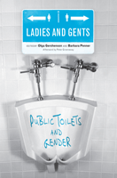

<body bgcolor="#FFFFFF" text="#000000" link="#0000FF" vlink="#CC0000" alink="#CC0000"><center><hr width="350" size="1" align="center" noshade>Talking about toilets&#151in all their material, social, symbolic and discursive complexity<hr width="350" size="1" align="center" noshade><p><a href="https://cdcshoppingcart.uchicago.edu/Cart/ChicagoBook.aspx?ISBN=9781592139392&&PRESS=temple" target="_top">Buy this book!</a> | <a href="https://cdcshoppingcart.uchicago.edu/Cart/Cart.aspx?PRESS=temple" target="_top">View Cart</a> | <a href="https://cdcshoppingcart.uchicago.edu/Cart/Cart.aspx?PRESS=temple" target="_top">Check Out</a></p><p></p></center><!--none//--><h1>Ladies and Gents</h1>
<H2>Public Toilets and Gender</H2>
<h3>edited by Olga Gershenson and Barbara Penner, foreword by Judith Plaskow, afterword by Peter Greenaway</h3>
<P>cloth 1-59213-939-6 $85.50, Jun 09, <FONT COLOR=#990033>Available</FONT>
<br>paper 1-59213-940-X $32.95, Jun 09, <FONT COLOR=#990033>Available</FONT>
<BR> 262 pp
6x9
1&nbsp;figure 32&nbsp;halftones
</P><BLOCKQUOTE><I>"Thoughtful analysis of the place of toilets in modern culture and psyche has often been as hard to find as a decent public convenience in any major Western city. </i>Ladies and Gents<i> is a timely and educational addition to the unheralded and hitherto sorely neglected field of toilet studies."</i><BR>&#151<b>Rose George</b>, author of <i>The Big Necessity: The Unmentionable World of Human Waste and Why It Matters</i></p></I></BLOCKQUOTE>
<p>Public toilets provide a unique opportunity for interrogating how
conventional assumptions about the body, sexuality, privacy, and
technology are formed in public spaces and inscribed through design
across cultures. This collection of original essays from international
scholars is the first to explore the cultural meanings, histories, and
ideologies of public toilets as gendered spaces.</p><p><i>
Ladies and Gents</i> consists of two sets of essays. The first, "Potty
Politics: Toilets, Gender and Identity," establishes the importance
of accessible, secure public toilets to the creation of inclusive cities,
work, and learning environments. The second set of essays, "Toilet
Art: Design and Cultural Representations," discusses public toilets as spaces of representation and representational spaces, with reference
to architectural design, humor, film, theater, art, and popular culture.
Compelling visual materials and original artwork are included throughout,
depicting subjects as varied as female urinals, art installations
sited in public restrooms, and the toilet in contemporary art.
</p><p>Taken together, these seventeen essays demonstrate that public
toilets are often sites where gendered bodies compete for resources
and recognition&#151and the stakes are high.</p><p>
Contributors include: Nathan Abrams, Jami L. Anderson, Johan
Andersson, Kathryn H. Anthony, Kathy Battista, Andrew Brown-May,
Ben Campkin, Meghan Dufresne, Peg Fraser, Deborah Gans, Clara
Greed, Robin Lydenberg, Claudia Mitchell, Alison Moore, Frances
Pheasant-Kelly, Bushra Rehman, Alex Schweder,
Naomi Stead, and the editors.</p>
<BR>&nbsp;<h2>Excerpt</h2><P>Excerpt available at <a href="http://www.temple.edu/tempress">www.temple.edu/tempress</a></p>
<BR>&nbsp;<h2>Reviews</h2>
<p><i>"This innovative collection calls upon academics, designers, and activists in a wide range of disciplines and professions to address the issue of public toilets as a gendered space. It offers a provocative and thorough overview of the subject. Engagingly written and packed with illustrations, the book will appeal to academics, students, and others interested in interrogating issues of embodiment, gender, sexuality, place, space, culture, architecture, and design."</i><br>&#151<b>Robyn Longhurst</b>, Professor of Geography at the University of Waikato
<p><i>"The essays here, like their authors, are varied and wide-ranging, offering scholarly reflections—from cinematic, philosophical, sociological, architectural, and other perspectives—on the business of doing one’s business. Even the essays’ titles count for a lot, and the writers don’t let us down. Readers may be drawn by clearly articulated topics ("Potty Privileging in Perspective: Gender and Family Issues in Toilet Design"); cultural affinity ("‘Our Little Secrets’: A Pakistani Artist Explores the Shame and Pride of Her Community’s Bathroom Practices"); or catchiness and cultural affinity ("The Jew on the Loo: The Toilet in Jewish Popular Culture, Memory, and Imagination"). The writing and level of scholarship are consistently excellent...readers will be left with some very serious things to consider." </I>
<br>&#151<b><i>Library Journal</b></i>
<p><i>"</i>Ladies and Gents<i> is a ground-breaking collection that achieves a diverse albeit idiosyncratic range of perspectives through its authorship which includes academics, designers, and activists exploring issues of embodiment, gender, sexuality, place, space, culture, architecture, and design. This text deals with pertinent issues largely suppressed in the name of decency or simply ignored by mainstream society.... [A] fascinating and important read." </I><br>&#151<b><i>Interiors</b></i>
<p><i>"</i>Ladies and Gents<i> presents both a useful introduction to 'toilet studies' as well as insightful contributions to scholarship on the body, the construction of gender roles and expectations, and the gendering of space....Together, the essays that comprise </i>Ladies and Gents<i> nicely illustrate the necessity of taking seriously the interrelationship of physical structures and discourse in the creation of cultural meaning.... As an illustration of the variety of approaches one can take to the study of gender and space more broadly defined, </i>Ladies and Gents<i> comes very highly recommended." </I><br>&#151<b><i>H-Net</b></i>
<p><i>"[A]s the collection brilliantly reveals, public toilets serve as an interesting entry point for scholarly reflections about gender, the body, sexuality, class, race, ethnicity, religion, equal rights, social justice, and notions of dirt and elimination. At the same time, they have a material dimension that touches disciplines such as product design, architecture, and urban planning. The volume comprises sixteen varied essays of excellent scholarship that canvass public toilets from cinematic, philosophical, psychoanalytical, etymological, sociological, architectural, and other angles....Despite the division of the book into two parts, the essays fluently follow each other. Each brings the reader a step further into the meaning of public toilets.... [W]ith a sound introduction mapping the key literature from several disciplines, Olga Gershenson and Barbara Penner succeed in their aim to establish the basis of a 'new'—or more precisely, 'formerly invisible' and scattered—field of toilet studies as a fully fledged scholarly interdiscipline." </I><br>&#151<b><i>Technology and Culture</b></i>
<BR>&nbsp;<h2>Contents</h2><P>
Foreword
<br>Acknowledgments
<br>Introduction: The Private Life of Public Conveniences
<p><b>Potty Politics: Toilets, Gender, and Identity</b>
<br>1. The Role of the Public Toilet in Civic Life
<br>2. Potty Privileging in Perspective: Gender and Family Issues in Toilet Design
<br>3. Geographies of Danger: School Toilets in Sub-Saharan Africa
<br>4. Gender, Respectability, and Public Convenience in Melbourne, Australia, 1859–1902
<br>5. Bodily Privacy, Toilets, and Sex Discrimination: The Problem of “Manhood” in a Women’s Prison
<br>6. Colonial Visions of “Third World” Toilets: A Nineteenth-Century Discourse That Haunts Contemporary Tourism
<br>7. Avoidance: On Some Euphemisms for the “Smallest Room”
<p><b>Toilet Art: Design and Cultural Representations</b>
<br>8. Were Our Customs Really Beautiful? Designing Refugee Camp Toilets
<br>9. (Re)Designing the “Unmentionable”: Female Toilets in the Twentieth Century
<br>10. Marcel Duchamp’s Legacy: Aesthetics, Gender, and National Identity in the Toilet
<br>11. Toilet Training: Sarah Lucas’s Toilets and the Transmogrification of the Body
<br>12. Stalls between Walls: Segregated Sexed Spaces
<br>13. “Our Little Secrets”: A Pakistani Artist Explores the Shame and Pride of Her Community’s Bathroom Practices
<br>14. In the Men’s Room: Death and Derision in Cinematic Toilets
<br>15. “White Tiles. Trickling Water. A Man!” Literary Representations of Cottaging in London
<br>16. The Jew on the Loo: The Toilet in Jewish Popular Culture, Memory, and Imagination
<br>Afterword
<br>Contributors
<br>Index
</P><BR>&nbsp;<H2>About the Author(s)</H2>
<table><tr><td valign="top"><img src="/tempress/authors/1992_au1.gif" height="90" width="75"></td><td width="100%" valign="middle"><p><b>Olga Gershenson</b> is Assistant Professor in the
Department of Judaic and Near Eastern Studies at the
University of Massachusetts Amherst and the author of <i>Gesher: Russian Theatre in Israel—A Study of Cultural Colonization</i>.</P></td></tr></table><table><tr><td valign="top"><img src="/tempress/authors/1992_au2.gif" height="90" width="75"></td><td width="100%" valign="middle"><p><b>Barbara Penner</b> is a Lecturer at the Bartlett School of
Architecture, University College London, author of <i>Newlyweds on Tour: Honeymooning in Nineteenth-Century America</i> and co-editor of <i>Gender Space Architecture</i>.</P></td></tr></table>
<BR><H2>Subject Categories</H2>
<p><A HREF="/tempress/gender.html" TARGET="_top">Gender Studies</a>
<BR><A HREF="/tempress/cultural.html" TARGET="_top">Cultural Studies</a>
<BR><A HREF="/tempress/general.html" TARGET="_top">General Interest</a>
</p>
<p align="center"><a href="https://cdcshoppingcart.uchicago.edu/Cart/ChicagoBook.aspx?ISBN=9781592139392&&PRESS=temple" target="_top">Buy this book!</a> | <a href="https://cdcshoppingcart.uchicago.edu/Cart/Cart.aspx?PRESS=temple" target="_top">View Cart</a> | <a href="https://cdcshoppingcart.uchicago.edu/Cart/Cart.aspx?PRESS=temple" target="_top">Check Out</a></p><p><font face="Arial" size="1"><a href="copyright.html" onMouseOver="window.status='Web Copyright Policy';return true;" onMouseOut="window.status=''" title="Web Copyright Policy">&copy;</a> 2015 <a href="http://www.temple.edu" target="new" onMouseOver="window.status='Link to Temple University home page';return true;" onMouseOut="window.status=''" title="Link to Temple University home page">Temple University</a>. All Rights Reserved. http://www.temple.edu/tempress/titles/1992_reg.html</font></p>